Games use p5.js, p5.play and matter.js libraries in javascript
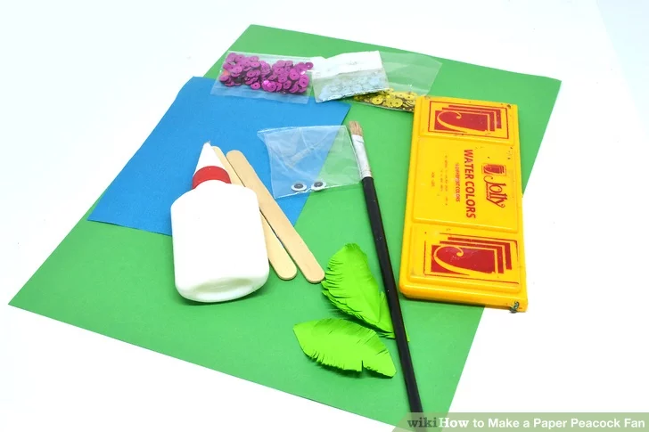Gather your supplies
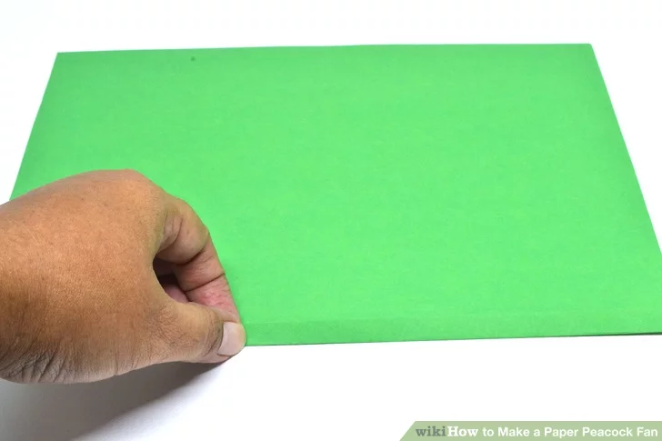Take your sheet of dark green paper and make one fold up, about two centimetres wide
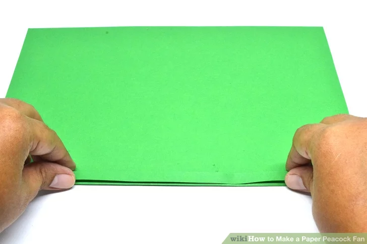Turn the paper over to the other side, and make another fold in the same way.
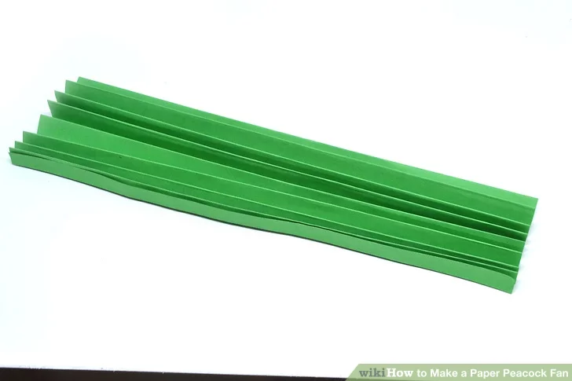Continue turning the paper over and making folds until you reach the end of the paper. You should have an accordion-like pleat of folds
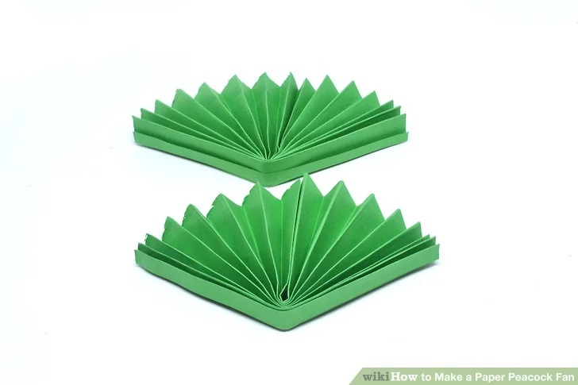Cut the paper in half along one of the folds. Fold one half of the paper in half, along the width. Repeat with the other half.Take the inner ends of one half of the paper, and glue them together. Do the same with the other half. You should have two pleated semicircles
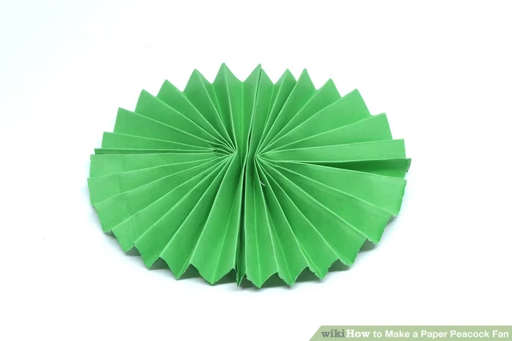Staple the semicircles together to make one full circle. Now you have made a circular fan
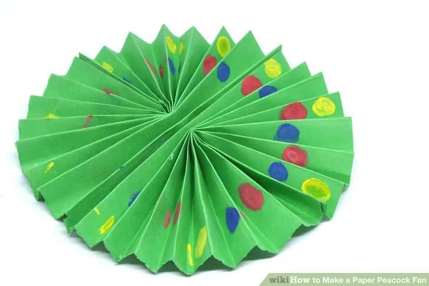Paint small red, yellow and blue dots on your circular fan. Wait for the paint to dry
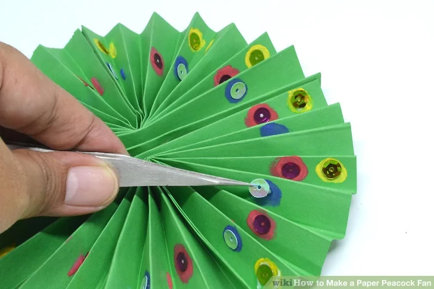Glue the sequins on top of the dots of paint for some added sparkle
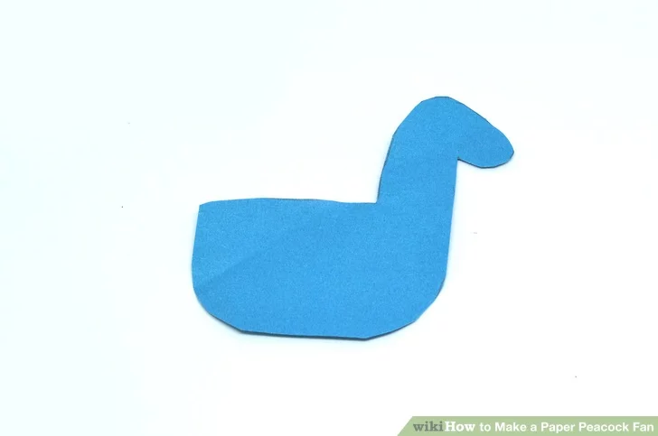Cut out a peacock body shape from the blue cardstock
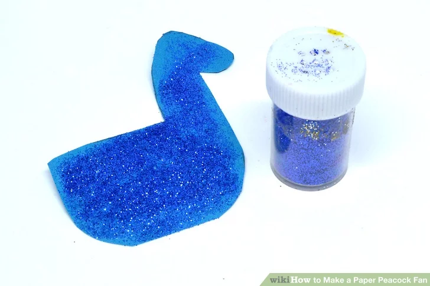Paint the peacock's body all over with the blue glitter glue. Wait for it to dry
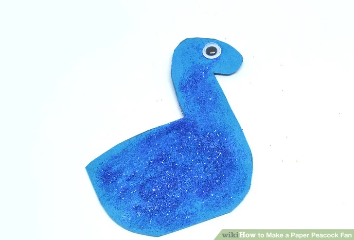Glue the googly eye onto the peacock's body
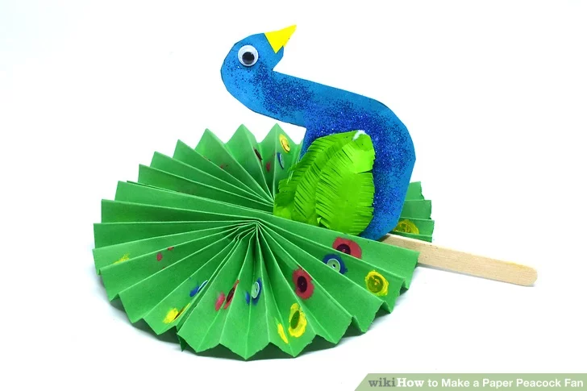Cut out a small triangle from the yellow cardstock, and glue it onto the peacock's body. This is the peacock's beak.Glue the green feathers onto the peacock's body. These are its wings.Glue the popsicle stick between a fold on the circular fan.Glue the peacock's body onto the popsicle stick